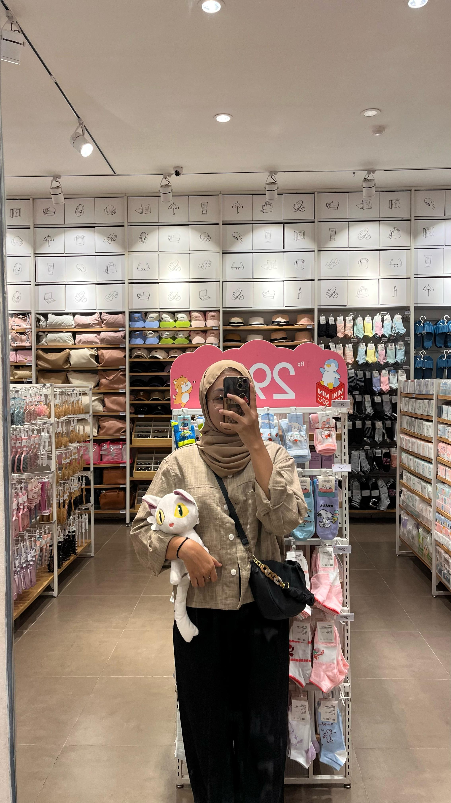

Tentang Saya
Halo! Nama saya Anggi. Saya adalah penggemar ikan hias dan memiliki hobi memelihara berbagai jenis ikan air tawar dan laut. Website ini saya buat untuk berbagi informasi dan pengalaman seputar dunia perikanan dan akuarium.
Halo! Nama saya Anggi. Saya adalah penggemar ikan hias dan memiliki hobi memelihara berbagai jenis ikan air tawar dan laut. Website ini saya buat untuk berbagi informasi dan pengalaman seputar dunia perikanan dan akuarium.